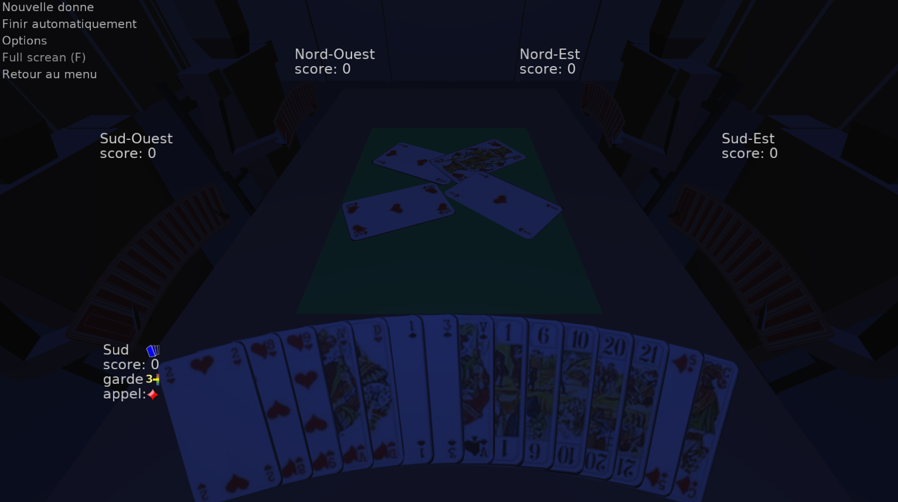
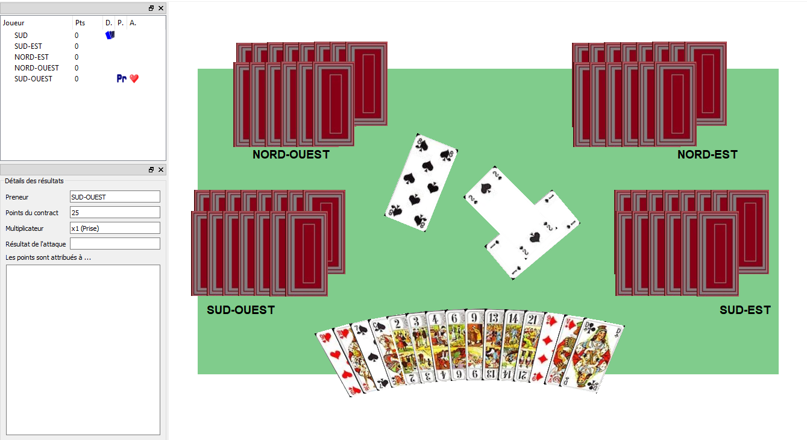
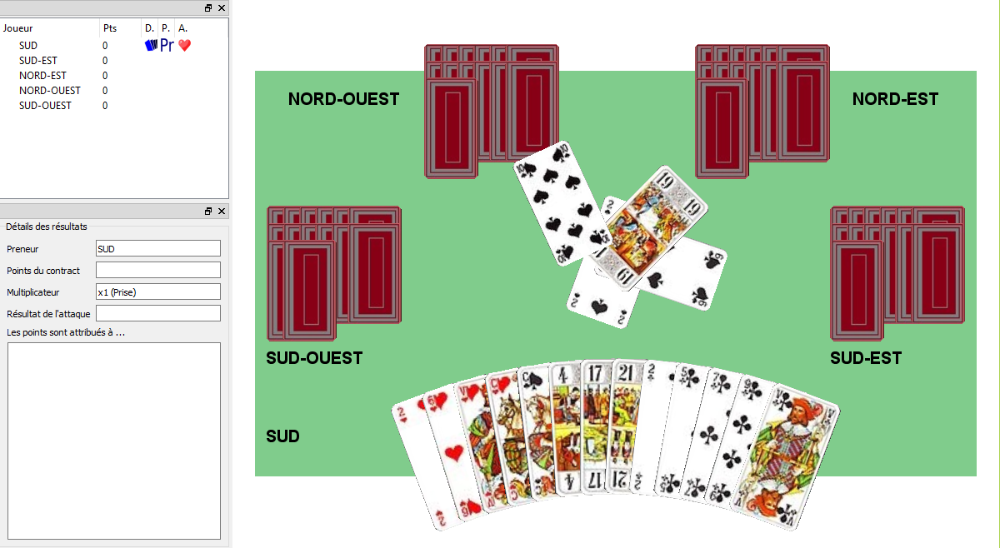

Description du jeu
Le jeu émule le jeu de Tarot, à 4 et 5 joueurs, en solo (un seul joueur humain). Les règles du Tarot sont celles décrites depuis le site de la Fédération Française de Tarot.
( only in  )
)
Le jeu émule le jeu de Tarot, à 4 et 5 joueurs, en solo (un seul joueur humain). Les règles du Tarot sont celles décrites depuis le site de la Fédération Française de Tarot.
J'ai repris le développement du jeu après une pause. La principale amélioration est l'intelligence artificielle, mais qui est toujours en cours de développement.
L'interface a été complètement refaite en utilisant ma propre librairie (TRE), qui permet entre-autres de publier le jeu jouable dans un navigateur web. Le coeur du jeu est stabilisé. L'intelligence artificielle a été améliorée, mais encore loin de l'objectif final.


J'ai créé le coeur du jeu (en C++), qui contrôle le déroulement des parties, avec une IA basique. Le rendu est fait avec Qt et d'interfaçage de Qt avec OpenGL 2.

